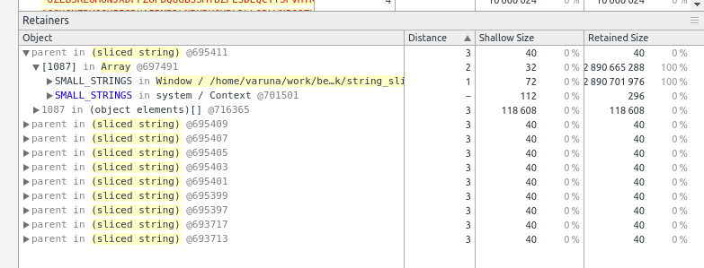

Wallapatta got some new features.
Wallapatta Update
December 01, 2015
First is full width blocks. These span into the sidenote area. These are ideal for large images and quotes.

Next is javascript, coffeescript or weya template blocks. These can have code that generates html.
Heres a coffeescript block.
<<<coffee
"7 * 100 = <strong>#{7 * 100}</strong>"Here's a weya block that generates the Forestpin logo in an SVG.
<<<weya
G = 1.618
H = 13
order = [2, 4, 1, 0, 3]
heights = (H * Math.pow G, i for i in order)
@svg width: 250, height: 250, ->
@g transform: "translate(2, 154)", ->
for h, i in heights
@g ".bar", transform: "translate(#{i * 50}, 0)", ->
@rect y: -h * G, width: 46, height: h * G, fill: '#4a4a4a'
@rect width: 30.67, height: h,fill: '#98ff98'
@rect x: 30.67, width: 15.33, height: h, fill: '#8bea8b'Parent in (sliced string)
November 23, 2015

In Google Chrome 1 when you take substrings of a larger string, the larger string is not garbage collected even if it is no longer referenced. The problem seems to be because the substring keeps a reference to the parent string.
Demo
The demo iteratively,
- creates a random large string (~10M in length)
- take a few substrings (each of about 50 characters)
- push the substrings to a global array (the only thing permanently referenced)
- remove references to the large string
You would assume that larger strings will get garbage collected. And would expect the program to run without a problem for many many iterations - until the memory taken up by the smaller strings hits the limit.
Unfortunately in Google Chrome it doesn't work like that. The small substrings keep a reference to the parent and therefore it crashes after a few iterations. Try http://vpj.github.io/bench/string_slice.html in Google Chrome.It crashes before 2000 cycles. 2 If you take a heap snapshot on Chrome Inspector, you can see the large strings, referenced as parent in (sliced string) by smaller strings (as shown in the above screenshot).
Then we wrote a copy of the same program, which creates a copy of the substrings before storing them. The following splitting and concatenation creates a actual copy of the string, instead of a reference copy.
newSmallString = smallString.split('').join('')Try http://vpj.github.io/bench/string_slice_join.html, which will run runs for many more iterations doing the same thing.
jsblocks, React, Angular performance compared with Weya.coffee
May 27, 2015
I came across jsblock yesterday on Hacker News. They had a nice performance comparison test case set comparing jsblocks with Angular and React. It made me curious to see how the small library we use (Weya.coffee) compares in performance with these.
I ran the tests on Chrome broswer on a Macbook Air (1.6Ghz i5, 2GB). I have not altered test cases provided on jsblock, and have added test cases for Weya for Rendering and Syncing Changes., The results on Safari are not accurate in syncing-changes test case, because jsblock test case use setTimeout(0) to resync which is called before html is actually rendered while the Weya test case use requestAnimationFrame which waits till it's rendered.
Rendering
| Library | Time (ms) | Bar (shorter is better) |
|---|---|---|
| Weya.coffee | 404 | ==== |
| jsblocks | 801 | ======== |
| React | 1065 | ========== |
| Angular | 2432 | ======================== |
Syncing Changes
| Library | Time (ms) | Bar (shorter is better) |
|---|---|---|
| Weya.coffee | 1593 | ======== |
| jsblocks | 2035 | ========== |
| React | 2781 | ============== |
| Angular | 8081 | ======================================== |
Small data preparation
May 24, 2015
One of the biggest small data problems, is that data is structured in different ways. Some legacy systems give out reports in the formats like below.
SUPPLIER STATEMENT 38 November 2011
Supplier B0001 SupplierX Corp
51, AAA STREET, BBB
===========================================================
DATE REF.No. DESCRIPTION DEBIT CREDIT
===========================================================
01/04/10 Balance B/F 1,000.00
01/05/10 AAAA-00001 PAYMENT 500,00
01/06/10 AAAA-00002 PAYMENT 250.00
01/07/10 IIII-00001 INVOICE 2,000.00
--------- ----------
750.00 3,000.00
31/03/11 Balance C/F 2,250.00
Contd. ......
SUPPLIER STATEMENT 38 November 2011
Supplier B0002 SupplierY Corp
51, ACD STREET, BBB
===========================================================
DATE REF.No. DESCRIPTION DEBIT CREDIT
===========================================================
01/04/10 Balance B/F 1,500.00
01/05/10 AAAA-00003 PAYMENT 1,500,00
01/07/10 IIII-00002 INVOICE 2,000.00
01/08/10 IIII-00003 INVOICE 1,000.00
--------- ----------
1,500.00 4,500.00
31/03/11 Balance C/F 3,500.00
Contd. ......Getting this into a spreadsheet or a database table to analyse it is not easy. So I started a project to help transform data in various report formats into simple tables and export as comma-separated files.
The project is called cellular, and it is still in the early stages. I thought of writing about it to get ideas and suggestions. It has a simple user interface with the table on the left side with a sidepane on right side.
Wallapatta Blog
May 18, 2015
I just started moving my blog from Svbtle to a static blog generated that I created. It is based on Wallapatta. I wanted to get into svbtle when Dustin started it, and got invite a little before they opened it to the public. And it's sad to part ways.
Wallapatta is a Markdown like syntax that can create documents with layouts inspired by handouts of Edward R. Tufte1. We created it to use for documents. The two great things about Wallapatta is that it creates documents with sidenotes and create print frindly documents - Wallapatta editor creates print layouts with intelligent page breaks by trying not to place breaks at middle of content like most word processing software do.
I built in a simple blog generator into Wallapatta, for personal use. But it's super easy for anyone who wants to give it a go.
How to start a Wallapatta blog?
It's pretty easy.
- Install Node.js
NPM usually comes with Node.js. Visit https://nodejs.org/ and see installation instructions. It's usually a download and install, unless you want it installed through a package manager like
brew. - Install Wallapatta node odule
Run the following command in command line.
npm install wallapatta -gThat's it and you have wallapatta installed.
- Fork the boilerplate
Make a fork of the git repositors on github: https://github.com/vpj/wallapatta-blog-boilerplate
This repo contains this blog post, and 3 empty blog posts, a configuration file and templates for blog.
Edit
templates/post.coffeeto change the post template andtemplates/blog.coffeeto change the blog template. Compile these coffeescript code to javascript by runningcoffee -c *.You will have to change the name of the blog, which is "Varuna Jayasiri" in the two tamplate files. And also the Google Analytics code.
Change
blog.yamlto edit blog configurations like the order of posts, post titles, dates, etc. - Generate the blog
wallapatta --blog blog.yaml --output [output_directory] --staticThe above command will create the html files on the
output_directoryprovided.--staticspecifies that it should copy Wallapatta rendering tools to the folder. (You can omit this if you change the templates to get these from a CDN).blog.cssfile on the boilerplate repository contains some css. This file is used in default templates. So you need to copy them to theoutput_directory. - That is it!
What is Wallapatta syntax?
It looks like this.
###Heading 1
Introduction to **Heading 1**
* Point one
Description about point one
* Point two
####Subtopic
Subtopic content
This belongs to Heading 1It uses indentation to identify what belong where. Indentation is required for specifying content for components like lists, code blocks, special blocks, etc as well. So it's more of a programmer friendly syntax. Indentation helps while working with large documents because you can do stuff like code folding.
We've changed some of the syntax from Markdown; for instance, << and >> are used for links instead of [](), because we felt that it's a little more intuitive due to its resemblence with HTML tags.
Read the Wallapatta reference for a detailed description on each component, including examples for usage.
Shared memory with Node.js
May 13, 2015
This is more like a tutorial on writing a simple node.js add-on to share memory among node.js processes.
One of the limitations of node.js/io.js is that they are single threaded. Only way to use multiple cores in the processor is to run multiple processes1. But then you are working on different memory spaces. So it doesn't help if you want multiple processes working on the same memory block. This is required in memory intensive tasks that cannot be efficiently sharded.
All the source code is available in Github.
Node addon
You need node-gyp installed to build the node module.
npm install node-gyp -gI think the node.js version matters as the addon api has changed. I was working on node 0.12.2, when I tested this out.
binding.gyp is required by node-gyp to build the addon.
Then comes shm_addon.cpp. This is a very basic addon that has one export createSHM, which creates a shared memory block of 800,000 bytes (attaches if exists) with read & write permission to all users2.
Shared memory is allocated with shmget and attached to the address space of the process with shmat.
shmid = shmget( key, MEM, IPC_CREAT | 0666 );
data = (char *)shmat( shmid, NULL, 0 );It keeps a pointer to the memory block and returns it if createSHM is called twice by the same node.js program3. createSHM returns an ArrayBuffer, initialized with the pointer to the shared memory.
Local<ArrayBuffer> buffer = ArrayBuffer::New(isolate, (void *)data, MEM);The node module shm_addon is built with node-gyp with following commands.
node-gyp configure
node-gyp buildThe node addon will be created in build/Release/shm_addon.node.
Parent and child programs
This is a simple counting problem to illustrate how shared memory can be used. We will populate the array of 200,000 32-bit integers with the sequence 0,1,2,...998,999,0,1,2,..998,999,0,1,2,.... So there are 200 positions with each integer between 0 and 999. Each of the child programs (workers) will count the number of occurrences of each integer between 0 and 999 by inefficiently traversing the array a 1,000 times.
spawn.coffee is the parent program that starts the child processes. child.coffee is the child program.
Shared memory is attached by parent program and child program by calling the node addon.
shm = require './build/Release/shm_addon'
a = new Int32Array shm.createSHM()We are calculating the time taken for the child processes to count. Time it takes for processes to get spawn and exit is excluded. Therefore the child processes start counting when they receive something in the standard input. Number of child processes can be set with CHILDREN.
process.stdin.on 'data', (msg) ->
start()Running coffee spawn.coffee will start processes and do the counting and show the time it took to complete.
You can take a look at shared memory allocated by running command ipcs.
IPC status from <running system> as of Tue Apr 14 13:58:16 IST 2015
T ID KEY MODE OWNER GROUP
Shared Memory:
m 65536 0x000019a5 --rw-rw-rw- varunajayasiri staff
m 65537 0x000019a4 --rw-rw-rw- varunajayasiri staff
m 65538 0x000019a2 --rw-rw-rw- varunajayasiri staffResults
bench.coffee was used to find the time a single process takes to count.
@chethiyaa did some testing on a quad core i7.
| # children | single process (ms) | multi process (ms) | |
|---|---|---|---|
| 1 | 398 | 430 | |
| 2 | 782 | 394 | |
| 4 | 1626 | 415 | |
| 8 | 3300 | 799 | |
| 16 | 6285 | 1594 | |
| 32 | 3183 | ||
| 64 | 6372 | ||
| 128 | 13049 | ||